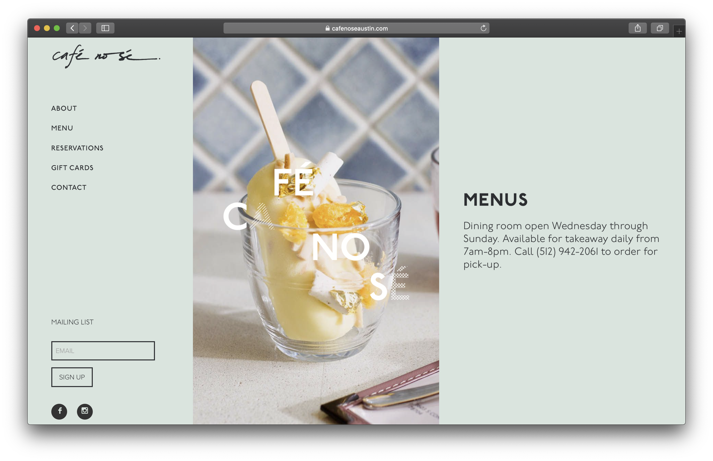
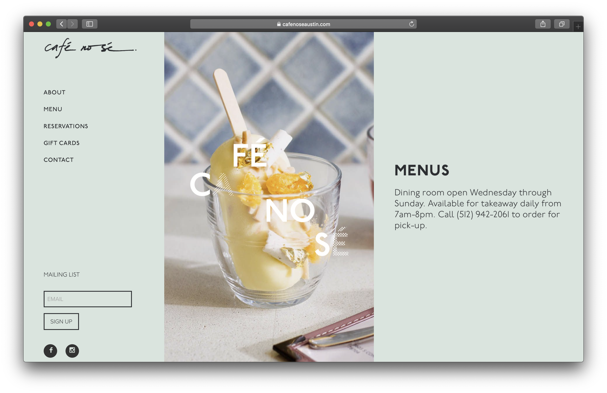
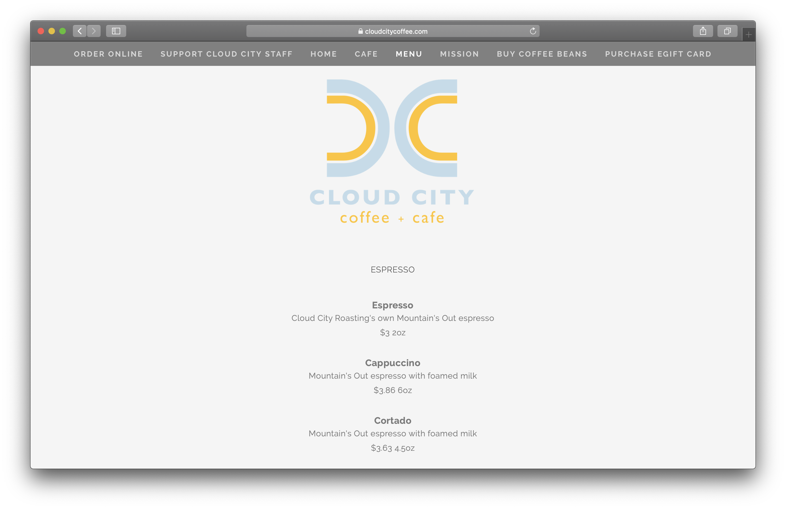
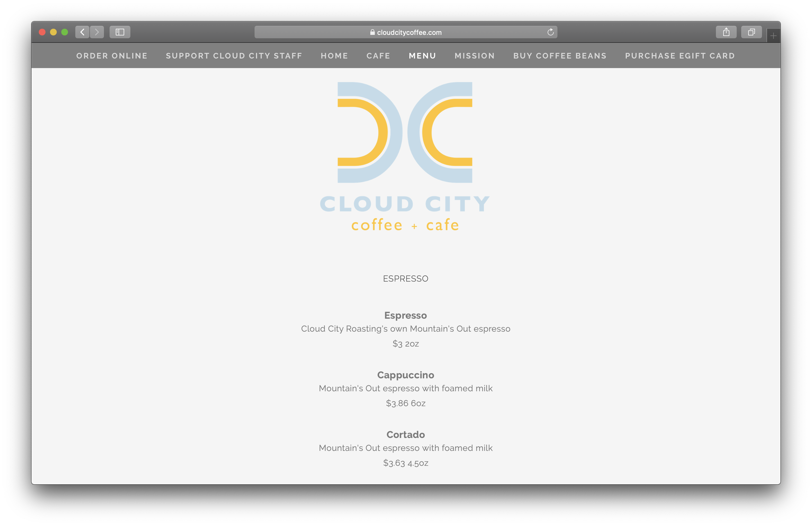
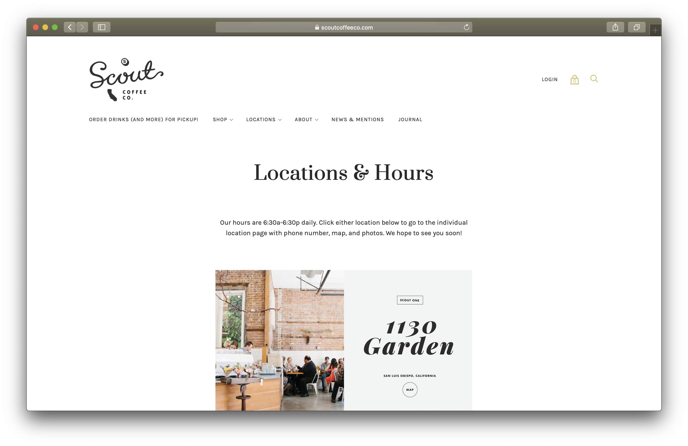
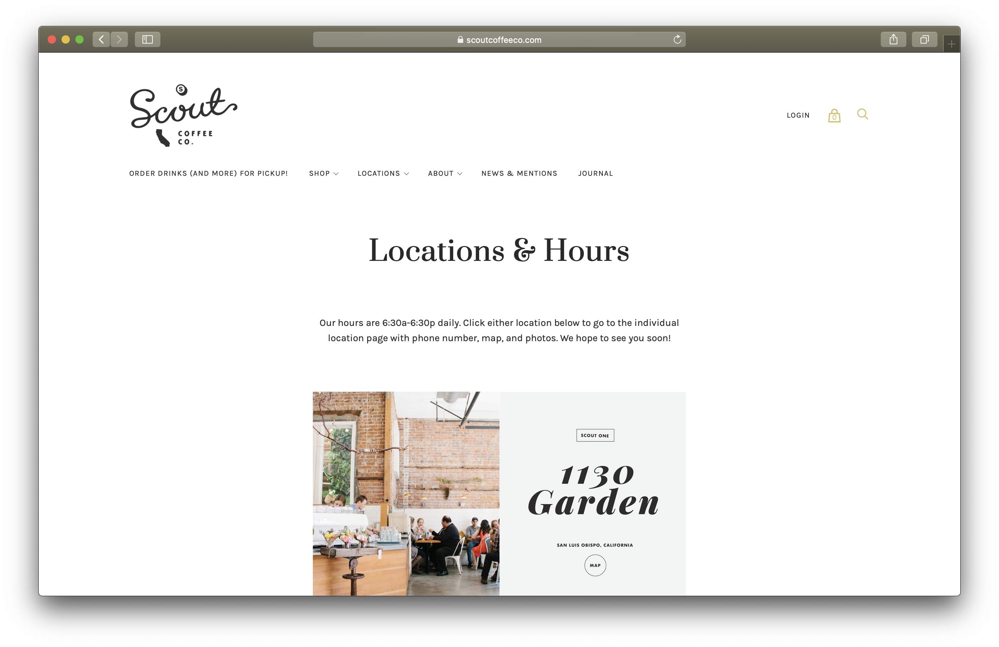

Final project proposal
Introduction
Cool Beans Coffee Bar
At Cool Beans Coffee Bar, we are a vibrant coffee shop based in San Francisco, with a simple goal, we try our hardest to give our customers the best coffee, food, and service that we possibly can. We aren't coffee snobs, we aren't a corporate chain, just a simple place you can come and relax. We invite you to come try it for yourself!
Target audience
Local coffee enthusists who are looking to experience great coffee in a family run coffee shop where you can be nothing but yourself.
To give our customers the best coffee, food and service that we possibly can.
Comparative analysis
Cafe Nose Austin
 

Cloud City Coffee
 

Scout Coffee Co.
 

Cool Beans Website Content
Home
Relax & Enjoy
A coffee shop where you can be yourself.
Front counter you see when you enter the shop with all the menus behind the counter and workers making coffee and food.
About Us
At Cool Beans Coffee Bar, we are a vibrant coffee shop based in San Francisco, with a simple goal, we try our hardest to give our customers the best coffee, food, and service that we possibly can. We aren't coffee snobs, we aren't a corporate chain, just a simple place you can come and relax. We invite you to come try it for yourself!
San Francisco based coffee shop with coffee cups and latte art.
Menu
Array of images of coffee drinks and pastries tiled next to eachother.
Drinks
-
Coffee
4.
-
Americano
3.25.
-
Expresso
3.
-
Macchiato
3.25.
-
Cortado
3.50.
-
Cappuccino
3.50.
-
Latte
4.
-
Hot Chocolate
3.50.
-
Mocha
4.50.
-
Cold Brew
4.50.
-
Nitro
5.
-
Affogato
7.
Baked Goods
-
Crossant
4.
-
Danish
3.25.
-
Muffin
3.
-
Cinnamon Roll
3.25.
-
Turnover
3.50.
-
Scone
3.50.
-
Cookie
2.
-
Macarons
3.50.
-
Biscotti
3.
Location & Hours
Location
Located in Haight-Ashbury, Cool Beans offers a fresh new perspective on coffee and what it means to be a communal coffee lounge.
Hours
Join us daily for the freshest coffee in San Francisco!
672 STANYAN ST.
SAN FRANCISCO, CA 94117
6-7 MON-FRI | 7-7 SAT-SUN
415-682-4023
Map of Haight-Ashbury with a star where Cool Beans is located